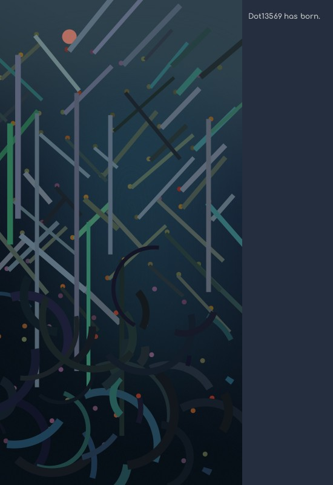
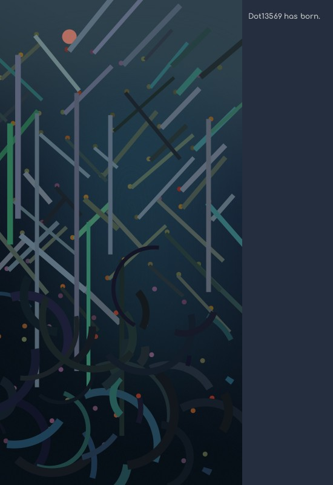

Life Of Dots
Life of dots is a metaphor for variable life situations. A dot drops into the Plinko game, leading to different results arbitrarily under the directing of the pillars. In a world full of uncertainty, any life could end up in an extreme living condition. These various consequences often depart from the very same starting point, as results of accumulated random or unwilling choices. That’s also the stories of minorities, marginal societies, and non-representable. Using games as the medium is not to depreciate their toughness. Address it playfully is to appreciate it gratefully.
It’s is part of the project Illuminate the Non-Representable. It’s developed during the KU workshop, where the student got paired up with professors and assisting them in their projects.
I tried to map the idea of non-representable with some playful representation to compensate for the disturbance and seriousness coming along with this topic. I felt that the uncertainty in people’s life is a form of amplified randomness. This idea about amplification reminds me of a lever, a machine that can trigger huge impact by slight changes. And that’s exactly how piano functions mechanically. Following that idea, this work cloud has become an installation for playing the “song of life” from the non-representable. However, it feels a bit cliche to me. Ends up I choose Plinko, a game people used to make simple random choices. I made a digital version of it and adjusted the visual elements under my preferences.
 Enter
Enter
Enter
Enter Enter
Enter Enter
Enter
At 2020.